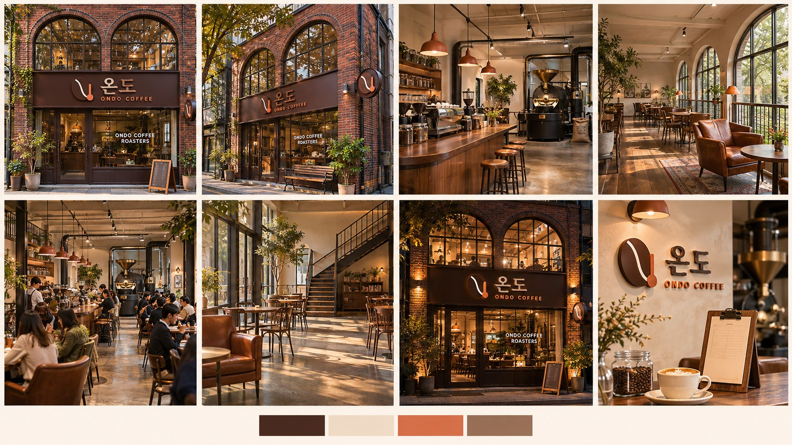
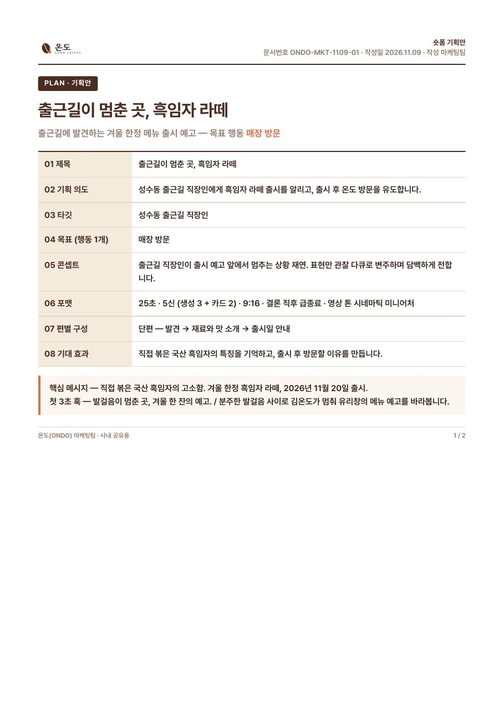
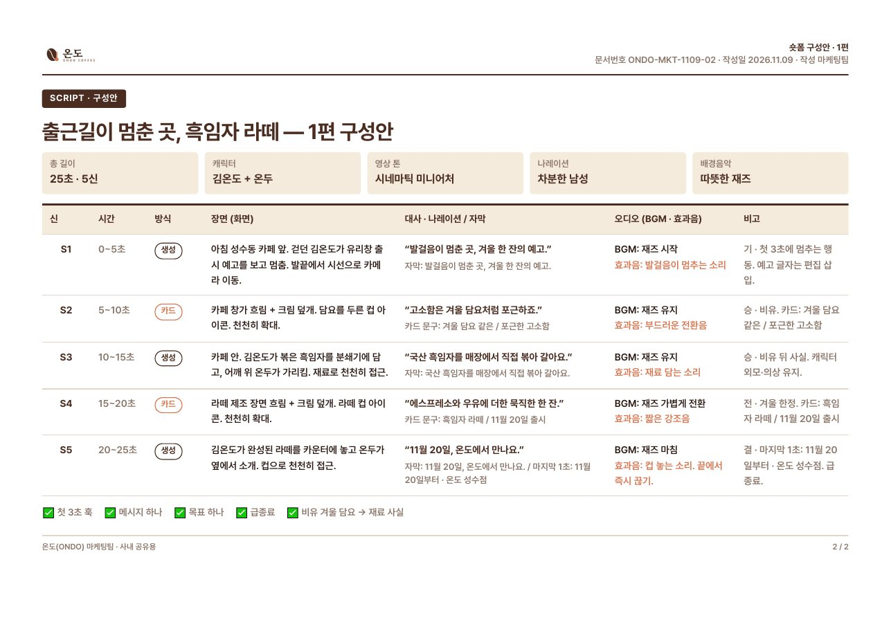
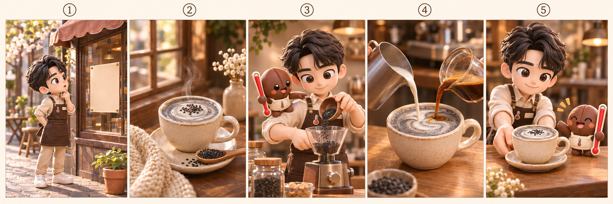
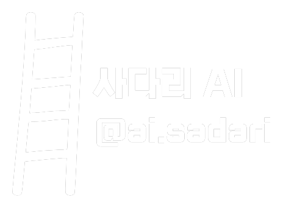
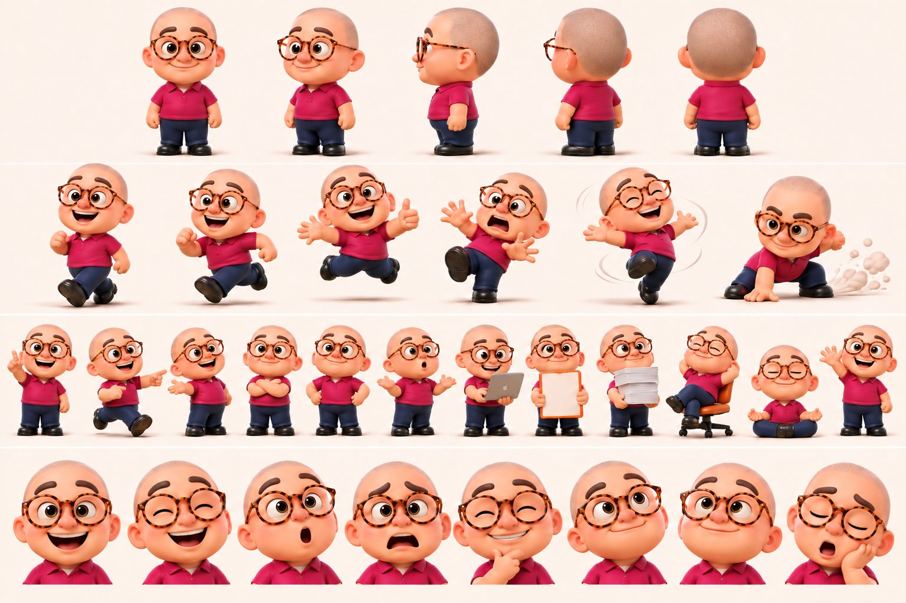

SBA 준비사항
오늘의 흐름종합봇 폴더 하나
AI 이미지·영상 콘텐츠 제작 수강생용 안내 페이지입니다. 수업 순서대로 로그인·설치 → 교안 → 복사용 프롬프트 → MD·KB 파일을 모았습니다. 3주차(11/21) 자료는 아래에 있습니다. 1주차(11/7) · 2주차(11/14) 자료는 위쪽 다시 보기 칸에 접어 두었습니다.
복습 게임 — 혼돈의 성3주차 내용을 던전 게임으로 · 직업 3종 · 퀴즈 20문제 · 약 15~20분게임 시작 ▶안 되는 부분은 화면을 캡처해서 강사에게 보여주세요. 결과물은 단톡방에 올려 서로 공유합니다.
2주차 다시 보기카페 온도 직원의 하루 · 기획구성안 · 포스터 · 카드뉴스 · 숏폼 · 보고서펼치기 ▾접기 ▴
카페 온도 직원의 하루
온도 카페 직원으로서 기획구성안 · 포스터 · 카드뉴스 · 숏폼 · 보고서를 봇으로 만듭니다. 교안 순서대로 정리했습니다. 모든 글은 복사, 모든 파일은 받기로 가져가세요.
오늘의 플로우
한 눈에 보는 오늘 수업 흐름입니다. 누르면 그 파트로 이동합니다.
봇 연결 · 채팅 시작
위 (SBA) 온도봇 받기 ZIP을 바탕화면에 풀면 SBA_온도봇 폴더 하나가 생깁니다. 프로젝트는 봇마다 따로 만들고, 폴더는 모두 이 폴더 하나만 연결합니다.
- Work 탭 → 새 프로젝트 → 아래 이름 붙이기
- ⋯ → 프로젝트 수정 → 폴더 추가 → 바탕화면 SBA_온도봇 → 저장 → 폴더 신뢰
- 새 채팅은 프로젝트 안에서, 위쪽이 Work인지 확인
프로젝트 이름 6개 (수업 순서)
봇이 번호 메뉴를 보여 줍니다. 번호만 입력하면 그 봇으로 바로 시작합니다. 진행 규칙은 온도봇 안에 이미 들어 있어서 따로 붙여 넣을 필요가 없습니다.
- 1 기획구성안봇
- 2 포스터봇
- 3 카드뉴스봇
- 4 숏폼봇
- 5 보고서봇(PPT/HTML)
- 6 캐릭터봇
내부 웹 로그인
봇이 캡컷·제미나이·일레븐랩스를 대신 조작하려면, 챗지피티 앱 안의 내부 웹에 로그인돼 있어야 합니다.
내부 웹에서 구글에 먼저 로그인해 두면, 다른 사이트는 “Google로 계속하기” 버튼만 누르면 들어갈 수 있습니다.
① 구글 로그인 페이지 열기
챗지피티 앱 내부 웹에서 구글 로그인 페이지(accounts.google.com)를 열어줘. 로그인은 내가 직접 할게. 끝났다고 하면 알려줄게.
② 사이트 3곳 한꺼번에 열기
이제 내부 웹에서 캡컷, 제미나이, 일레븐랩스를 각각 새 탭으로 한꺼번에 열어줘. 세 탭이 다 열리면 알려 줘. 각 탭에서 내가 "Google로 계속하기"를 눌러 로그인할게. 로그인 끝났다고 하면 세 곳 모두 로그인 상태인지 확인해 줘.
브랜드 · 캐릭터 · 매장
성수동 로스터리 카페 온도(ONDO). 시트 한 장이면 어느 장면이든 같은 얼굴 · 같은 매장으로 나옵니다.
* 이미 (SBA) 온도봇 폴더에 포함되어 있습니다. 참조만 하세요.




샘플 추가 · 관리하는 법
봇마다 샘플 폴더에 스타일 견본이 들어 있고, 봇은 이걸 번호 메뉴판으로 보여 줍니다. 마음에 드는 이미지를 붙이면 언제든 늘릴 수 있습니다.
- 이름은
스타일_번호_이름.png - 스타일은 항상 3개 이상 유지
- 추가·삭제 후엔 메뉴판이 자동으로 다시 만들어짐
- 샘플은 느낌 참고용, 결과물에 그대로 쓰지 않음
➕ 추가하기 (4단계)
이 스타일도 추가해줘
이 영상으로 프레임 시트 만들어서 스타일로 추가해줘
🗑️ 빼기 · 정리하기
샘플에서 __번 스타일 빼고 메뉴판 다시 만들어줘
기획구성안봇 — 기획안 · 구성안 PDF
주제만 정하면 봇이 질문으로 이끌어 기획안 · 구성안 PDF를 만듭니다. 이 PDF가 바통이 되어 M4 숏폼봇으로 넘어갑니다.


대가 노하우를 KB로숏폼 기획 원칙 MD 만들기
첨부한 자료는 [대가 이름]의 숏폼 기획 노하우야. 이 자료에서 기획 원칙만 뽑아 MD 파일로 정리해줘. 원문 문장은 그대로 베끼지 말고, 쉬운 말로 요약해줘. [정리 항목] 1. 훅 설계 원칙 2. 구성(기승전결) 원칙 3. 엔딩 원칙 4. 자막 · 말투 원칙 5. 하지 말아야 할 것 [출력 형식] - 제목은 #, 항목은 ##, 내용은 - 글머리표 - 항목마다 예시 한 줄 - 파일 이름 : 대가-기획원칙.md
포스터봇 — 2주년 이벤트 포스터 3종
같은 내용, 스타일만 바꿔 세 번. 번호만 고르면 됩니다.


카드뉴스봇 — 같은 봇, KB만 바꿔 끼우기
정보형(원두 보관법)과 홍보형(흑임자 라떼) 각 4장.
③-1 정보형 · 원두 보관법


③-2 홍보형 · 흑임자 라떼


숏폼봇 — 기획구성안 PDF로 25초 영상
M1에서 만든 기획구성안 PDF를 넘기면 25초 · 5신(생성 3 + 카드 2) 숏폼을 만듭니다.


보고서봇(PPT/HTML) — 직접 짓기
지침(AGENTS.md)을 대충 쓰고 ChatGPT로 다듬습니다. 매장 운영 자료는 수업용 가상 데이터입니다.
아래는 내가 대충 쓴 봇 지침이야. 이걸 ChatGPT 프로젝트 폴더에 넣을 AGENTS.md로 다듬어줘. [꼭 지킬 형식] - 맨 위 : 너는 ○○ 봇이다 + 무엇을 만드는지 한 줄 - 이끄는 규칙 : 매 답변 맨 위 진행 표시(📍 단계/전체), 질문은 한 번에 하나, 번호 선택지 + 0 모르겠어요, 단계 끝마다 ✅ 정한 것 → 👉 다음 할 일 → 번호 선택지, 끝나면 다음 추천 3개 - 스타일 : 샘플/스타일목록.md에서 3개 이상 메뉴판으로 고르기 - 진행 순서 : 단계별로 번호를 붙이고, 컨펌이 필요한 단계에 ✅ 표시 - 결과 : 결과물/ 폴더에 저장 + 링크 - 금지 : 없는 숫자 만들기, 한 번에 여러 질문 [내가 대충 쓴 지침] (여기에 붙여넣기) 설명 없이 AGENTS.md 내용만 마크다운으로 출력해줘.
🖥️ PPT형: 키로 넘기는 보고서
📱 인터랙티브형: 폰에서 탭 · 그래프
이 PPT를 HTML로 바꿔줘.
5장 오른쪽 사진 빼고, 글 칸을 가로 전체로 넓혀줘 7장 글 목록을 3단계 흐름도(→)로 바꿔줘 모든 장 본문 24px 이상, 제목 40px로 9장을 왼쪽 PPT · 오른쪽 HTML 2열 비교표로 12장 숫자 ‘25초’만 주황색 · 2배 크기로 방금 고친 7장 모양을 3 · 8장에도 똑같이
← → ↑ ↓ 키, 이전 · 다음 버튼으로 넘겨줘 휠을 내리면 다음 장, 올리면 이전 장 유튜브처럼 아래 바를 끌어서 원하는 장으로 결과물 영상을 3장에 넣고 재생되게 (영상 파일은 HTML과 같은 폴더에) 문구 복사 버튼, 이미지 다운로드 버튼 달아줘 눌러서 펼치기 · 움직이는 그래프 · 탭 전환 · 전체 화면 버튼
이 HTML을 편집 가능한 PPT로 만들어줘 PDF로도 저장해줘
HTML 활용 PPT · 카드뉴스 제작
보고서처럼 발표자료(PPT)와 카드뉴스도 HTML로 만듭니다. 먼저 HTML로 만들고, 필요할 때 PDF·PPT로 받거나 화면 녹화로 영상을 만듭니다. 자세한 안내는 1주차 복습에도 있습니다.
HTML로 PPT(발표자료) 만들기
PPT보다 HTML인 이유 10가지
기존 PPT가 있으면 그대로 넣고 “이 PPT를 HTML로 바꿔줘” 하면 됩니다.
“이 PPT를 HTML로 바꿔줘” 한마디면 내 PPT를 베이스로 HTML 발표자료가 만들어집니다.
AI작업/소스의 ___.pptx 를 HTML 발표자료로 바꿔줘. - 내용과 순서는 그대로, 디자인은 MD 폴더의 디자인 MD 규칙으로 - 16:9, 방향키로 넘기기, 파일 1개 - 글이 많은 장은 표·흐름도로 바꿔줘 - 완성 파일은 AI작업/결과/발표.html 로 저장
재료 준비
| 재료 | 형태 | 넣을 폴더 |
|---|---|---|
| 원고 | 텍스트·한글·워드 파일, 기존 PPT 자료 (PDF·이미지보다 텍스트가 정확 · PPT는 pptx 파일 그대로) | 소스 |
| 디자인 규칙 | 디자인 MD (1주차 dope·slush·perk 예시) | MD |
| 참고 샘플 | 마음에 드는 PPT 캡처 1~2장 | 샘플 |
생성: 목차 먼저, 컨펌 후 생성
AI작업/소스의 원고로 HTML 발표자료를 만들어줘. - 16:9 (1280×720), ___장 - 키보드 방향키로 넘기기, 하단에 쪽 번호 - 파일 1개(HTML 안에 CSS·JS 포함) - 디자인은 MD 폴더의 디자인 MD 규칙을 따를 것 - 글이 많은 장은 표·흐름도·비교 카드로 바꿔줘 - 먼저 장별 목차만 보여주고, 내가 OK하면 만들어 - 완성 파일은 AI작업/결과/발표.html 로 저장
미리보기
- AI작업/결과의 발표.html 더블클릭브라우저에서 열립니다. 방향키 → ← 로 넘기기
- 글자만 잔뜩 보이면 메모장으로 열린 것파일 우클릭 → 연결 프로그램 → 크롬 또는 엣지
수정: 한 장씩 콕
3번 장 제목을 "___"로 바꾸고, 나머지는 그대로 둬.
5번 장 글을 3단계 흐름도로 바꿔줘.
시각화 요청 3종
__번 장 내용을 비교표로 바꿔줘 (항목 / 전 / 후)
__번 장을 왼쪽→오른쪽 단계 흐름도로, 화살표 포함
__번 장의 핵심 숫자 하나를 크게, 아래에 한 줄 설명
모션 넣기
모든 장에 등장 모션을 넣어줘: 제목은 아래에서 올라오고, 카드는 0.15초 간격으로 순서대로. 숫자는 0부터 올라가게.
내보내기
| 형식 | 방법 |
|---|---|
| 브라우저에서 Ctrl+P → 대상: PDF로 저장 → 레이아웃 가로 → 여백 없음 → 배경 그래픽 체크 | |
| PPT | 아래 프롬프트로 변환 (일부 모션·효과는 빠질 수 있음) |
| 링크 | 홈페이지·노션 등에 올리면 링크로 공유 |
이 HTML을 같은 디자인의 pptx 파일로 바꿔서 AI작업/결과 폴더에 저장해줘.
샘플 보기: 5장 발표자료 👆 아래 발표자료의 양 옆을 눌러 보세요
HTML로 움직이는 카드뉴스 만들기
샘플 먼저 보기: 3종 👆 아래 카드를 눌러 보세요
규격
| 항목 | 기본값 |
|---|---|
| 비율 | 4:5 (1080×1350) · 릴스용은 9:16 (1080×1920) |
| 장수 | 4장 |
| 장당 시간 | 3~4초, 자동 넘김 |
| 디자인 | 디자인 MD 따르기 |
모션 메뉴: 골라서 말하기
기본 프롬프트
주제: ___ 이 주제로 움직이는 카드뉴스를 HTML 파일 1개로 만들어줘. - 4:5 (1080×1350), 4장, 장당 3.5초 자동 넘김, 마지막 장 후 처음으로 반복 - 1장: 후킹 제목 / 2~3장: 핵심 내용 / 4장: 정리 한 줄 - 모션: 제목 아래에서 등장, 숫자 카운트업, 흐름도 선 그리기 - 글은 장마다 2줄 이내, 크게 - 디자인은 MD 폴더의 디자인 MD 규칙을 따를 것 - 먼저 장별 문구만 보여주고, 내가 OK하면 만들어 - 완성 파일은 AI작업/결과/카드뉴스.html 로 저장
유형별로 한 줄 추가
기본 프롬프트 아래에 붙여넣으세요. 위 샘플 3종이 이렇게 만들어졌습니다.
각 장 핵심 숫자를 화면 절반 크기로, 0부터 카운트업. 이전 숫자는 회색 취소선, 새 숫자는 강조색으로.
2~3장은 3단계 흐름도로. 상자가 순서대로 나타나고 화살표가 그려지게.
전/후를 좌우로 나눠줘. 왼쪽은 회색으로 흐려지고, 오른쪽은 강조색으로 밀려 들어오게.
미리보기 · 수정
결과 폴더의 카드뉴스.html 더블클릭 → 마음에 안 드는 장만 콕 집어 수정
2번 장 숫자를 더 크게, 넘김 속도는 4초로.
영상으로 뽑기
- 카드뉴스 열기 → F11 전체화면
- Win + Shift + R → 캡처 도구 녹화 → 카드 영역 지정윈도우 11 기본 캡처 도구
- 4장이 한 바퀴 돌면 녹화 중지 → 저장
AI작업/결과/카드뉴스.html 을 한 바퀴 녹화해서 mp4로 결과 폴더에 저장해줘. 크기는 1080×1350.
캐릭터봇 — 시트로 상황 컷 뽑기
시트를 첨부하면 얼굴 · 색 · 소품이 그대로 유지됩니다.
첨부한 캐릭터 시트와 똑같은 온두로, 카페 바에서 핸드드립 커피를 내리는 장면을 3:2 가로로 그려줘. 글씨는 넣지 마.


봇 고도화 — 결과 말고 봇을 고친다
아쉬운 점 1개 → AGENTS.md에 1줄 → 새 채팅에서 다시 돌려 비교.
## 추가 규칙 (v2) - 로고는 항상 오른쪽 아래, 폭은 포스터 폭의 18%, 아래 · 오른쪽 여백 40px로 고정한다. - 제목은 포스터 위쪽 1/4 안에 한 줄로, 가장 크게 넣는다.
마무리
수업이 끝나면 SBA_온도봇 폴더 안의 일반 브랜드 예시(샘플)는 삭제해 주세요. 저작권 이슈가 있을 수 있습니다. 봇은 그대로 두세요. 3주차에는 이 봇에 내 회사 재료를 넣어 씁니다.
내 종합봇 짓기
종합봇(팀장) 하나 아래 직원 6명 — 기획구성안 · 포스터 · 리서치 · 보고서 · 카드뉴스 · 숏폼 봇을 직접 만듭니다. 1회차는 강사(사다리 AI 시연)와 같이 내 회사 걸로, 2회차는 폴더를 지우고 혼자서 처음부터.
오늘의 플로우
같은 순서로 두 번 짓습니다. 누르면 그 파트로 이동합니다.
교안 · 재료 받기
브랜드가 없으면 강사와 같이 사다리 AI로 진행합니다. 사다리 재료 ZIP을 바탕화면에 풀면 로고 · 캐릭터 · 색감 · KB가 들어 있습니다.
📂 ZIP 안 미리보기받기 전에 내용 확인 — 누르면 펼쳐집니다
🖼 로고 2종

🧑🎨 캐릭터 — 댄디 시트

📄 KB_브랜드_사다리.md회사 소개 · 사업 · 구성원 · 말투
KB_브랜드_사다리
한 줄 소개
사다리(사다리스쿨)는 실제 업무가 바뀌는 AI 교육을 만드는 AI 교육 회사입니다. 온·오프라인 AI 교육과 함께, 조직의 AX(AI 전환) 도입 및 개선 외주 사업도 합니다.
사업 분야
- AI 교육 — 온라인(VOD · 줌 라이브) / 오프라인(기관 · 기업 출강) →
KB_제품_사다리강의.md - 조직 AX 도입 · 개선 외주 — 조직의 업무를 진단하고, AI 업무 봇 · 자동화를 설계 · 구축 · 개선해 드립니다
회사 정보
⚠️ 수업 실습용 설정입니다.
- 대표: 문단열
- 강사 3인: 문단열 · 서진원 · 이민지
- 개발자 2명 (AX 외주 · 사내 봇 개발)
- 사무실: 서울 광흥창역 근처
철학
- "더 제대로 된 AI 교육" — 도구 소개로 끝나는 교육이 아니라, 수강생이 다음 날 업무 방식이 바뀌는 교육을 지향합니다.
- 결과물 중심: 강의실에서 실제로 만들어 본 것만 남습니다.
- 사다리처럼 한 칸씩: 초보자도 따라 올라올 수 있게 단계를 쪼갭니다.
대표 콘텐츠·자산
- PE7+ 프롬프트 엔지니어링 프레임워크 (문단열 대표 개발)
- 인스타그램 계정 @ai.sadari (AI 주제 카드뉴스·릴스)
- 마스코트 캐릭터: 댄디 →
KB_캐릭터_댄디.md
대상 고객
- 정부기관·공공기관·기업 실무자 (AI 초보 다수)
- AI를 업무에 바로 적용하고 싶은 직장인
- AX(AI 전환) 도입 · 개선을 고민하는 조직
말투·톤
- 쉽고 친절하게, 비유를 적극적으로 씁니다 (요리·운동·일상 비유)
- 과장 금지, "업무가 바뀐다"는 실감을 주는 문장
금지
- "AI가 다 해준다"처럼 과장하는 표현
- 근거 없는 수치·효과 주장
📄 KB_제품_사다리강의.md온 · 오프라인 강의 상품 (가상)
KB_제품_사다리강의
⚠️ 아래 과정명·가격·일정은 수업 실습용 가상 데이터입니다. 실제 판매 정보로 쓰지 마세요.
제품 1. 오프라인 강의 — 「사다리 현장 클래스」
| 과정 | 대상 | 시간 | 내용 | 정원 | 가격(가상) |
|---|---|---|---|---|---|
| 첫 칸: AI 업무 입문 | AI 처음 쓰는 직장인 | 4시간 1회 | 챗GPT 기본, 보고서·메일 초안, 프롬프트 기초 | 30명 | 기관 출강 1회 120만 원 |
| 두 칸: 콘텐츠 자동화 | 홍보·마케팅 담당자 | 7시간 × 2회 | 포스터·카드뉴스·숏폼을 봇으로 제작 | 25명 | 1인 39만 원 |
| 세 칸: 나만의 업무 봇 | 반복 업무가 많은 실무자 | 7시간 × 3회 | 내 업무용 종합봇 설계·운영, KB 관리 | 20명 | 1인 69만 원 |
- 공통: 노트북 지참, 결과물을 들고 가는 실습형, 수료 후 봇 지침·KB 템플릿 제공
제품 2. 온라인 강의 — 「사다리 온라인 클래스」
| 과정 | 형태 | 분량 | 내용 | 가격(가상) |
|---|---|---|---|---|
| 하루 10분 AI 루틴 | VOD | 20강(강당 10분) | 매일 쓰는 AI 업무 팁 | 9만 9천 원 |
| 실시간 봇 만들기 | 줌 라이브 | 2시간 × 4회 | 매주 봇 하나씩, 질의응답 포함 | 29만 원 |
| 사다리 멤버십 | 월 구독 | 매월 신규 강의 2개 + 월 1회 라이브 | 최신 AI 도구 업데이트 | 월 1만 9천 원 |
공통 셀링 포인트
- 다음 날 업무가 바뀌는 실전형 AI 교육
- 한 칸씩 오르는 단계형 커리큘럼 (첫 칸 → 두 칸 → 세 칸)
- 결과물을 가지고 돌아가는 교육
진행 중 이벤트(가상)
- 12월 얼리버드: 「세 칸: 나만의 업무 봇」 20% 할인
- 수료생 후기 작성 시 멤버십 1개월 무료
문의(가상)
- 인스타그램 DM @ai.sadari
📄 KB_캐릭터_댄디.md마스코트 댄디 설정
KB_캐릭터_댄디
기본
- 이름: 댄디
- 역할: 사다리 AI 마스코트, 릴스·카드뉴스의 진행자
- 기준 이미지:
캐릭터/캐릭터_댄디_시트_01.png(항상 이 시트를 레퍼런스로 첨부)
외형 (고정)
- 그림체: 3D 치비(픽사풍), 2~2.5등신, 통통한 몸
- 머리: 스킨헤드(짧게 민 머리, 옅은 머리결 보임) — 반짝이는 대머리로 그리지 않음
- 얼굴: 동그란 큰 갈색 눈, 진한 갈색 눈썹, 통통한 볼, 큰 귀
- 안경: 동그란 대모갑(브라운 호피) 뿔테 — 항상 착용
- 옷: 라즈베리(마젠타) 폴로 셔츠 + 네이비 바지 + 검은 구두
- 배경: 따뜻한 오프화이트
시트 구성 (기준 이미지)
- 턴어라운드 5컷: 정면·3/4·측면·뒤 3/4·뒷면
- 액션 6컷: 걷기, 달리기, 점프, 놀람, 빙글 회전, 출발 자세
- 포즈 12컷: 손가락 가리키기, 설명, 팔짱, 허리 손, 어깨 으쓱, 노트북, 빈 화이트보드, 서류 더미, 의자에 기대기, 명상, 손 흔들기
- 표정 8컷: 웃음, 활짝 웃음, 놀람, 당황, 윙크·생각, 흐뭇, 미소, 졸림
- 소품으로 쓰기 좋은 것: 노트북, 빈 화이트보드(텍스트 합성용), 서류 더미, 사무용 의자
연출 규칙
- 립싱크보다 내용에 맞는 환경·소품·행동으로 표현
- 구석에 작게 넣지 않음 — 등장하면 주인공으로
- 비유 장면에 적극 활용
금지
- 시트와 다른 머리 모양·비율
- 실사 인물처럼 바꾸기
📄 색감_사다리.md색 · 로고 규칙 · 글꼴
색감_사다리
| 역할 | 색 | 쓰임 |
|---|---|---|
| 포인트 | 오렌지 | 강조 키워드, 버튼, 하이라이트 |
| 기본 1 | 블랙 | 제목, 자막 배경 |
| 기본 2 | 화이트 | 배경, 자막 글씨 |
로고 사용 규칙
- 항상 배경 제거(투명 PNG) 상태로 사용
- 밝은 배경 →
로고/로고_사다리_검정.png - 어두운 배경 →
로고/로고_사다리_흰색.png
글꼴
- 기본: Pretendard
- 숏폼 자막: 검은 배경 + 흰 글씨 (Pretendard)


내 브랜드로 하는 분 — 준비물
- 로고 이미지 1장 (바탕화면에 미리 저장)
- 색 3개 (메인 · 보조 · 포인트)
- 브랜드 소개 5줄 (한 줄 소개 · 고객 · 상품 · 말투 · 금지어)
- 캐릭터 이미지 (있으면)
종합봇 세우기 — 폴더 하나에서 시작, 내용을 하나씩 채워가며
먼저 바탕화면에 [○○○]_종합봇 폴더를 직접 만들고, ChatGPT에 똑같은 이름의 프로젝트를 만들어 연결합니다. 그다음 ① → ② → ③ 순서로 붙여 넣습니다. [○○○]만 내 브랜드 이름으로 바꾸세요.
- 📁 종합봇 폴더 하나 = ChatGPT 프로젝트 하나 (이름 똑같이)
- 📄 AGENTS.md = 팀장 — 일을 받아 직원에게 나눔
- 📁 00_공통 = 모든 직원이 같이 보는 회사 자료
- 📁 01~06 = 직원 — 자기 INS · KB · 샘플대로 일함
먼저 — 바탕화면 폴더 만들고 프로젝트에 연결
- 바탕화면에 [○○○]_종합봇 폴더 직접 만들기
- Work 탭 → 새 프로젝트 → 이름은 폴더와 똑같이 [○○○]_종합봇
- ⋯ → 프로젝트 수정 → 폴더 추가 → [○○○]_종합봇 폴더 하나만 → 저장 → 폴더 신뢰
- 새 채팅은 프로젝트 안에서, 위쪽이 Work인지 확인
① 폴더 구조 — 직원 폴더까지 한 번에
연결된 이 폴더([○○○]_종합봇) 안에 아래 구조를 한 번에 만들어줘. - AGENTS.md (빈 파일 — 팀장 지침) - 00_공통/ : 로고/ · 캐릭터/ · 색감/ · KB/ - 직원 폴더 6개 : 01_기획구성안봇/ 02_포스터봇/ 03_리서치봇/ 04_보고서봇/ 05_카드뉴스봇/ 06_숏폼봇/ → 직원 폴더마다 AGENTS.md(빈 파일) · KB/ · 샘플/ · 결과물/ → 03_리서치봇에는 자료/ 폴더도 하나 더 다 만들면 구조를 트리로 보여줘.
② 팀장 INS — 러프하게 설명하면 정식 AGENTS.md로
종합봇 AGENTS.md를 정식으로 써줘. 아래는 내가 대충 말한 내용이야. - 너는 [○○○]의 팀장이다. 직원(하위 봇) 6명에게 일을 나눠 맡긴다 - 직원 : 1 기획구성안 · 2 포스터 · 3 리서치 · 4 보고서 · 5 카드뉴스 · 6 숏폼 - 모든 직원은 일하기 전에 00_공통(로고 · 캐릭터 · 색감 · KB)을 먼저 읽는다 - '시작'이면 메뉴(번호)를 보여 주고, '○○ 만들고 싶어'면 그 직원에게 바로 넘긴다 - 넘길 때는 그 직원 폴더의 AGENTS.md를 읽고 그대로 따른다 - 질문은 한 번에 하나, 답은 번호로 받는다 - 직원은 바로 만들지 않는다 : 먼저 상담(무엇을 · 누구에게 · 왜) → 제안 → 컨펌 후 생성 (카드뉴스 · 숏폼은 스토리보드 한 장을 먼저 보여 주고, 영상은 신 1 샘플부터) - 링크 · 이미지를 주며 '○○ 샘플로 추가'라고 하면 그 직원의 샘플/에 번호를 이어 붙여 저장하고 샘플/스타일목록.md에 등록한다 (카드뉴스처럼 여러 장이면 폴더째, 목록엔 대표 첫 장만) 다 쓰면 메뉴 부분을 보여줘.
③ 공통 자료 채우기 — 회사 정보 · 로고 · 캐릭터 (긴 PDF는 MD로)
바탕화면의 회사 자료를 00_공통에 정리해줘.
- 로고 · 캐릭터 이미지 → 00_공통/로고, 00_공통/캐릭터
('종류_용도_특징_번호'로 이름 바꾸기)
- 회사 소개서 · 상품 안내 PDF처럼 긴 자료 → 핵심만 MD로 바꿔 00_공통/KB에
(KB_브랜드_[○○○].md · KB_제품_[○○○].md)
- 색 3개 → 00_공통/색감/색감_[○○○].md
자료에 없는 내용은 나에게 하나씩 물어봐.종합봇 짓는 6단계
이 6단계를 두 번 합니다. 1회차는 같이, 2회차는 혼자서. 직원은 기획구성안 → 포스터 → 리서치 → 보고서 → 카드뉴스 → 숏폼 순서로, 직원마다 INS → KB → 샘플.
⑥ 수정도 채팅으로 — MD를 직접 쓰지 않기
| MD 파일을 직접 열어 쓰면 | ChatGPT 채팅으로 시키면 | |
|---|---|---|
| 찾기 | ❌ 어느 파일을 고쳤는지 찾기 어려움 | ✅ 봇이 연결된 폴더의 MD를 찾아 고침 |
| 연결 | ❌ 이름 · 위치가 바뀌어 짜 둔 연결이 깨짐 | ✅ 이름 규칙 · 메뉴판 연결 그대로 |
| 정보 상태 | ❌ 봇은 내가 뭘 바꿨는지 모름 | ✅ 봇과 내가 같은 최신 정보를 공유 |
방금 결과에서 [아쉬운 점]이 마음에 안 들어. 다음부터 그러지 않도록 [0N_○○봇]/AGENTS.md (또는 KB 파일)에 규칙 한 줄을 추가해줘. 고친 부분을 전 · 후로 보여줘.
만들고 고쳐 가며 INS · KB를 키웁니다. 손으로 MD를 열지 말고, 채팅으로 시키세요.
기획구성안봇 — 직원 ① · INS 잡는 법
INS는 레시피입니다. 무엇을 어떤 순서로 묻고, 무엇을 내놓을지. 대충 말해도 ChatGPT가 정식으로 다듬습니다.
① INS — 대충 말하면 정식 AGENTS.md로
01_기획구성안봇/AGENTS.md를 정식으로 써줘. 아래는 대충 쓴 내용이야. - 역할 : [○○○]의 콘텐츠 기획구성안을 만든다 - 순서 : 누가 볼지 → 보고 할 행동 → 주제 3안 → 컨펌 → 구성안 - 출력 : 기획 의도 · 타깃 · 핵심 메시지 · 장면별 구성표 (PDF) - 결과는 01_기획구성안봇/결과물에 저장 2주차 유도 규칙 6줄도 맨 위에 넣어줘.
② KB · ③ 샘플
- KB : 기획 원칙 · 구성안 기준 (2주차 대가 노하우 KB 재사용 가능)
- 샘플 : 마음에 드는 구성안 예시 1개 (2주차 기획구성안 PDF 가능)
- ④ 생성 → ⑤ 아쉬우면 채팅으로 INS · KB 한 줄 고치기
포스터봇 — 직원 ② · 샘플이 핵심
INS엔 순서만, 디자인 규칙은 KB, 모양은 샘플에. 로고 · 색감은 00_공통에서 자동으로 가져옵니다.
① INS — 대충 말하면 정식 AGENTS.md로
02_포스터봇/AGENTS.md를 정식으로 써줘. 아래는 대충 쓴 내용이야. - 역할 : [○○○]의 행사 · 상품 포스터 1장 - 순서 : 무엇을 알릴지 → 문구 확인 → 샘플/스타일목록에서 3안 제시 → 고르기 → 생성 - 로고 · 색감은 00_공통에서, 로고는 오른쪽 아래 - 디자인 규칙은 KB를 따른다 - 결과는 02_포스터봇/결과물에 저장
② KB — 디자인 규칙
- KB_디자인원칙.md — 색 3개 이하 · 여백 40% 이상
- “세련되게” 대신 숫자로 풀어 쓰기
- KB_글자규칙.md — 제목 크기 · 줄 수
샘플도 채팅으로 — 링크 한 줄이면 끝
https://pin.it/○○○○ 포스터 샘플로 추가해줘.
샘플 추가 규칙은 ② 팀장 INS에 이미 들어 있습니다. 다운로드 · 이름 붙이기 · 폴더 넣기를 직접 하지 않아도 됩니다. 이미지를 못 받아 오면 캡처를 붙여 주세요.
- 스타일은 3개 이상 — 봇이 스타일목록(메뉴판)으로 고르게
- 생성 후 확인 : 로고가 00_공통 것인지, 색이 색감 파일과 같은지
리서치봇 — 직원 ③ · AI 5곳에 묻고 한 장으로
챗지피티 · 클로드 · 제미나이 · 그록 · 퍼플렉시티 5곳에 같은 질문을 넣고, 결과를 모아 종합 리서치 1개로 만듭니다. 챗지피티는 봇이 직접, 나머지 4곳은 봇이 내부 웹으로 들어가 결과를 가져옵니다(4곳 로그인은 수업 전에 미리). 결과는 보고서봇이 읽어 갑니다.
① INS — 대충 말하면 정식 AGENTS.md로
03_리서치봇/AGENTS.md를 정식으로 써줘. 아래는 대충 쓴 내용이야.
- 역할 : 한 주제를 AI 5곳(챗지피티 · 클로드 · 제미나이 · 그록 · 퍼플렉시티)에
리서치시키고, 결과를 모아 종합 리서치 1개로 만든다
- 순서 : 주제 · 목적 확인 → 리서치 프롬프트 1개 작성 → 컨펌
→ 챗지피티(너)는 직접 리서치
→ 클로드 · 제미나이 · 그록 · 퍼플렉시티는 내부 웹으로 들어가
같은 프롬프트를 넣고 결과를 가져와 03_리서치봇/자료에 저장
→ 5개 결과 비교 · 종합 : 공통점 · 차이점 · 출처
→ 일반 워드 문서처럼 HTML로 정리
- 마지막에 묻기 : 'PDF로도 받을까요? 모션 웹페이지로도 받을까요?'
→ PDF : 같은 내용을 PDF로
→ 모션 웹페이지 : 접었다 펴는 카드 · 키워드 위주 · 그래프 등 도식화
- 결과는 03_리서치봇/결과물에 저장 (보고서봇이 읽어 감)봇이 만들어 주는 리서치 프롬프트 (예시 — 5곳에 똑같이)
[주제]에 대해 리서치해줘. - 목적 : [무엇에 쓸지] - 꼭 알고 싶은 것 3가지 : ① ___ ② ___ ③ ___ - 최근 1년 자료 위주, 숫자는 출처와 날짜를 같이 - 표 1개 + 핵심 요약 5줄로 정리
② KB · ③ 샘플
- KB : 리서치 질문 틀 · 출처 규칙(숫자는 출처 · 날짜와 함께) · 종합 기준
- 샘플 : 종합 리서치 HTML 예시(워드 문서형) · 모션 웹페이지 예시(접었다 펴기 · 그래프)
- 자료/ : AI 5곳 원문 저장 칸 — 종합은 결과물/에
- ④ 생성 → ⑤ 아쉬우면 채팅으로 INS · KB 한 줄 고치기
보고서봇 — 직원 ④ · 다른 직원 결과물 읽기
리서치봇 HTML과 다른 직원 결과물을 모아 HTML 한 장으로 정리합니다. PDF · PPT 내보내기는 2주차 M5+를 참고하세요.
① INS — 대충 말하면 정식 AGENTS.md로
04_보고서봇/AGENTS.md를 정식으로 써줘. 아래는 대충 쓴 내용이야. - 역할 : 03 리서치 결과와 다른 직원 결과물을 모아 보고서 HTML 1장 - 순서 : 보고 대상 · 목적 확인 → 결과물 읽기 → KB 보고 양식대로 정리 → 샘플 스타일 고르기 → HTML - 맨 위에 한 줄 요약, 결과물 이미지는 썸네일로 - 결과는 04_보고서봇/결과물에 저장
② KB · ③ 샘플
- KB : 보고 양식(요약 · 배경 · 내용 · 다음 할 일) · 회사 보고 말투
- 샘플 : 보고서 스타일 2~3종 (2주차 PPT형 · 인터랙티브 HTML)
- ④ 생성 → ⑤ 아쉬우면 채팅으로 INS · KB 한 줄 고치기
카드뉴스봇 — 직원 ⑤ · KB 채우기 ⭐
KB는 집집마다 다른 김치 레시피입니다. 같은 봇이라도 KB가 다르면 결과물 맛이 달라집니다. 장 수는 소재에 따라 정합니다 — 최대 7장, 4~5장도 괜찮습니다. 스토리보드 한 장으로 먼저 확인하고, OK면 전체를 생성합니다.
① INS — 대충 말하면 정식 AGENTS.md로
05_카드뉴스봇/AGENTS.md를 정식으로 써줘. 아래는 대충 쓴 내용이야. - 역할 : [○○○] 인스타 카드뉴스 + 캡션 (장 수는 소재에 따라 정한다 — 최대 7장, 4~5장도 괜찮다) - 순서 : 상담(주제 · 대상 · 목적) → 장 수 제안 · 장별 문구 컨펌 → 샘플 스타일 고르기 → 스토리보드 1장(전 장이 한눈에) 컨펌 → 전체 생성 - 숫자 · 사실은 KB_팩트에 있는 것만, 말투는 KB_취향 - KB_금지에 있는 말은 절대 쓰지 않는다 - 캐릭터는 00_공통 캐릭터 시트를 첨부 - 결과는 05_카드뉴스봇/결과물에 저장
② KB 3종
| KB | 무엇을 | 사다리 예시 |
|---|---|---|
| 팩트 | 상품 · 가격 · 일정 · 숫자 | 세 칸 과정 69만 원 (가상) |
| 취향 | 톤 · 폰트 느낌 · 문장 습관 | 짧은 문장, 비유 하나 |
| 금지 | 쓰면 안 되는 말 | “AI가 다 해준다” |
05_카드뉴스봇/KB에 파일 3개를 만들어줘. 1) KB_팩트.md — 상품 · 가격 · 일정 · 숫자 (내가 불러줄게) 2) KB_취향.md — 좋아하는 톤 · 폰트 느낌 · 문장 습관 예 : 짧은 문장, 숫자로 시작, 존댓말, 이모지 1개까지 3) KB_금지.md — 쓰면 안 되는 말 · 과장 표현 · 경쟁사 언급 하나씩 질문해서 채워줘.
- 채우는 법 : ① 봇과 대화로 ② 회사 자료를 요약해 MD로 ③ 대가의 원칙 심기
- 같은 주제로 만들고 옆 사람과 비교 — 차이는 대부분 KB_취향
- 없는 숫자를 지어내면 → “KB에 없는 숫자는 쓰지 말 것” 한 줄
카드뉴스 샘플은 폴더로 — 메뉴엔 대표 첫 장만
- 여러 장이 한 세트 — 흩어지면 순서가 꼬임
- 메뉴판엔 첫 장만 → 고르기 쉬움
- 고르면 봇이 폴더 전체를 참고
https://pin.it/○○○○ 카드뉴스 샘플로 추가해줘. 여러 장짜리야.
💡 꿀팁 — 숫자를 넣으면 믿음이 갑니다
| 숫자 없이 | 숫자를 넣으면 |
|---|---|
| AI 교육을 들으면 업무가 빨라져요 | 보고서 초안 2시간 → 20분 |
| 많은 분들이 만족했어요 | 수강생 300명 이상 |
| 짧은 시간에 배울 수 있어요 | 하루 10분, 20강 |
- 릴스 · 카드뉴스 모두 — 첫 장 · 첫 자막을 숫자로 시작하면 눈이 멈춥니다
- 수치 · 통계 · 전후 비교는 신뢰와 “쓸모 있다”는 느낌을 줍니다
- 단, KB_팩트에 있는 숫자만 — 지어낸 숫자는 금지
숏폼봇 — 직원 ⑥ · 웹까지 다녀온다
25초 · 5신 숏폼입니다. 1 · 3 · 5신은 AI 영상(캡컷 웹 시댄스 2.0 미니), 2 · 4신은 HTML 카드로 만듭니다. 구성안은 01 기획구성안봇에서 바통으로 받거나, 숏폼봇과 상담하며 주제 · 소재부터 다듬을 수도 있습니다. 로고 · 캐릭터 시트는 00_공통에서 가져옵니다. 내부 웹 로그인은 2주차 내부 웹 로그인을 먼저 확인하세요.
캡컷 웹에서 영상 만드는 순서 (1 · 3 · 5신)
06_숏폼봇/AGENTS.md를 정식으로 써줘. 아래는 대충 쓴 내용이야. - 역할 : [○○○]의 25초 · 5신 숏폼 (1 · 3 · 5신 = AI 영상, 2 · 4신 = HTML 카드) - 시작 : 둘 중 하나를 고르게 한다 1) 01_기획구성안봇의 구성안을 받아 쓰기 2) 나와 상담하며 주제 → 소재 → 구성안 다듬기 (질문은 한 번에 하나) - 순서 : 구성안 컨펌 → 스토리보드 1장(5신이 한눈에) → 컨펌 → 1 · 3 · 5신 기준 이미지를 한 장씩 생성 (스토리보드 컷 바탕) → 캡컷 웹 시댄스 2.0 미니로 신 1만 먼저 샘플 생성 → 마음에 들면 3 · 5신 생성 → 2 · 4신은 HTML 카드 - 로고 · 캐릭터 시트 · 색감은 00_공통에서, 신마다 5초, 파일 이름 S1 ~ S5 - 결과는 06_숏폼봇/결과물에 저장
완성 테스트 — 소스 한 줄 → 종합봇
새 채팅에서 두 가지로 시작할 수 있습니다. “시작”이라고 입력하면 메뉴 1~6번이 보이고, “○○ 포스터 만들고 싶어”처럼 말하면 2번 포스터봇(직원)에게 곧장 들어갑니다. 공통 자료가 같으니 모두 같은 브랜드로 나옵니다.
메뉴 1~6번이 보이면 번호를 고릅니다.
방법 2 : 12월 얼리버드 포스터 만들고 싶어메뉴 없이 2번 포스터봇으로 바로 들어갑니다. 같은 소스로 카드뉴스 → 숏폼까지 이어 가 보세요.
- 1 기획구성안봇
- 2 포스터봇
- 3 리서치봇
- 4 보고서봇
- 5 카드뉴스봇
- 6 숏폼봇
## 추가 규칙 (v2) - (아쉬웠던 점을 한 줄 규칙으로) 예) KB에 없는 숫자는 쓰지 않는다. 예) 로고는 항상 오른쪽 아래, 폭의 18%.
2회차 — 지우고, 혼자서 처음부터
1회차 폴더를 통째로 지우고 같은 순서로 다시 짓습니다. 강사는 순서만 알려 주고, 무엇을 쓸지는 알려 주지 않습니다. 프롬프트는 내 말로 직접, 막히면 손 들고 힌트를 받으세요.
| 1회차 · 같이 | 2회차 · 혼자 | |
|---|---|---|
| 프롬프트 | 복사 · 붙여넣기 | 내 말로 직접 |
| 강사 | 화면으로 전부 보여 줌 | 순서만 · 힌트만 |
| 목표 | 순서를 손에 익히기 | 혼자서도 만들 수 있게 |
집에서 계속 쓰는 법
봇은 사는 게 아니라 키우는 것입니다.
- 종합봇 폴더째 백업 (USB · 클라우드)
- 로고 · 상품이 바뀌면 00_공통만 고치면 모든 봇에 반영
- 새 직원 = 직원 폴더 하나 더 + 팀장 메뉴 한 줄
- 결과가 아쉬우면 채팅으로 KB · AGENTS.md에 한 줄씩
복습 게임 — 혼돈의 성
오늘 배운 순서를 던전 게임으로 한 번 더. 퀴즈를 맞히면 장비 · 물약 · 룬을 얻고, 많이 틀리면 마지막 보스를 이길 수 없습니다. 게임 시작 버튼은 페이지 맨 위에 있습니다.
- 직업 3종 : 지침의 기사(INS) · 지식의 마법사(KB) · 견본의 궁수(샘플)
- 빛나는 궤 = 퀴즈 20문제 : 첫 도전에 맞히면 룬 · 장비 · 물약, 틀리면 체력 · 마력이 깎입니다
- 틀린 문제는 층 입구 「기억의 제단」에서 복습 → 물약을 받고 직원을 구합니다
- 룬 14개 이상이어야 마지막 보스의 장막이 걷힙니다 — 많이 틀렸다면 처음부터 2회차
- 끝나면 결과 화면을 캡처해 단톡방에
PC : 클릭으로 이동 · 공격, Q · W 기술, 1 · 2 물약 / 폰 : 탭으로 이동, 아래 버튼. 배경음악과 효과음이 나옵니다 — 오른쪽 위 🎵(음악 : 보통 · 작게 · 끔) · 🔊(전체 소리)로 조절합니다.